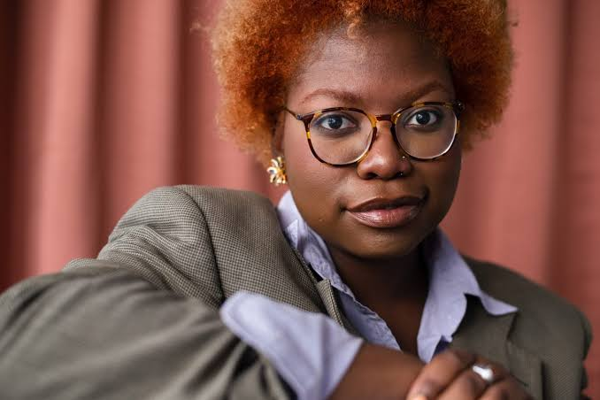

Our Speakers

Dr. Sarah Nakato
Director of Coffee Research - MAAIF, Uganda
Dr. Nakato leads coffee research on new varieties and disease-resistant plants. She has over 15 years of experience helping Ugandan farmers increase their yields and quality.

Mr. John Ssemwanga
Quality Manager - Uganda Coffee Development Authority
Mr. Ssemwanga is an expert in coffee grading, cupping and quality control. He trains exporters to meet international standards and get the best prices for Ugandan coffee.

Ms. Grace Achieng
Founder - Youth in Coffee Network, Kenya
Ms. Achieng inspires young people to join coffee farming and agribusiness. She runs training programmes that have supported over 500 youth coffee entrepreneurs across East Africa.

Mr. David Mugisha
Export Director - Pearl Coffee Exporters, Uganda
Mr. Mugisha has exported Ugandan coffee to Europe, Asia and America for 12 years. He will share practical advice on finding buyers and growing an export business.